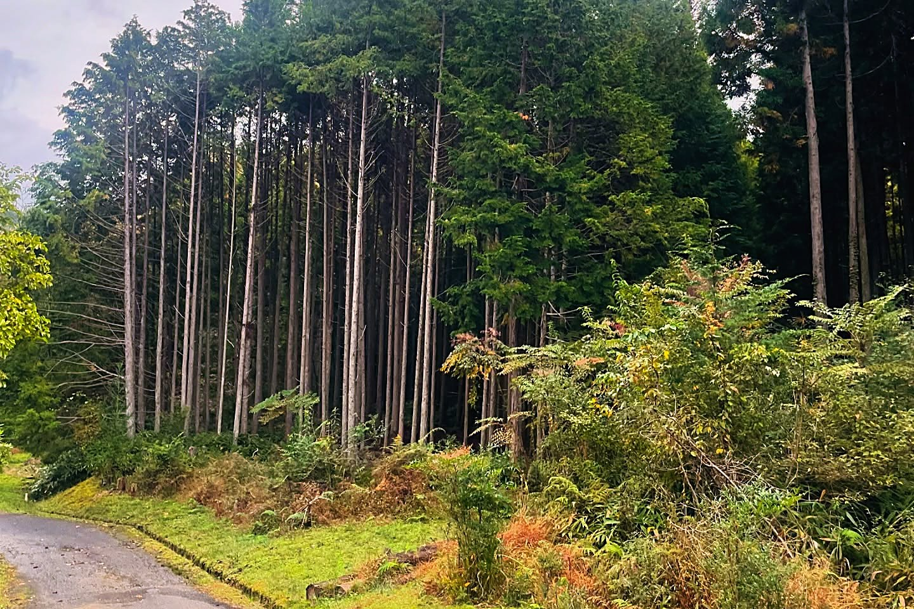
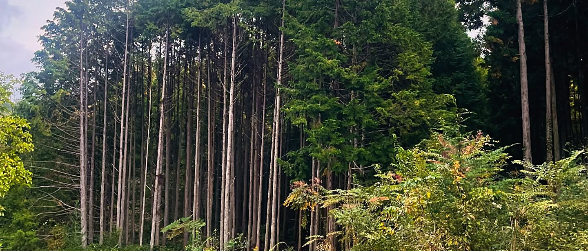
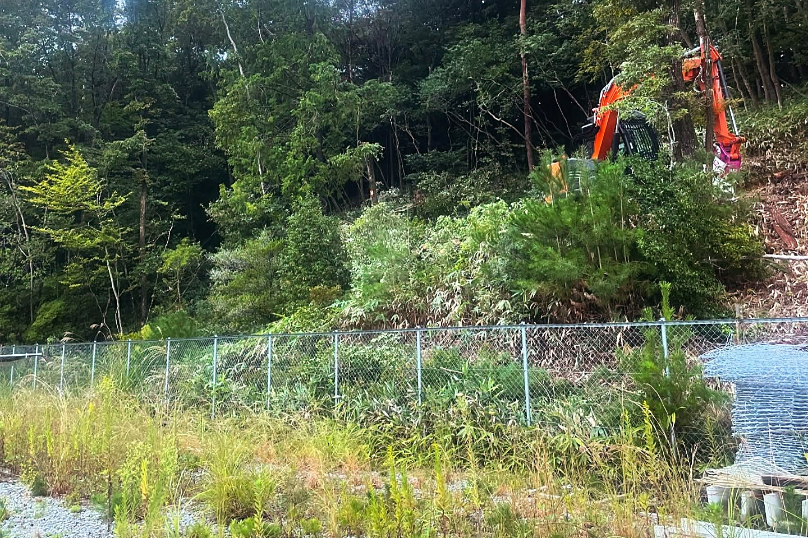
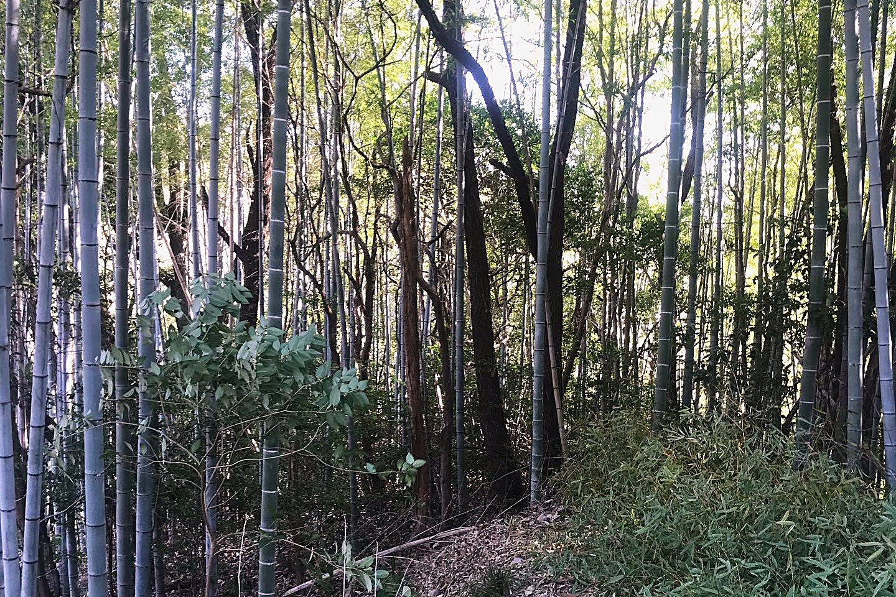
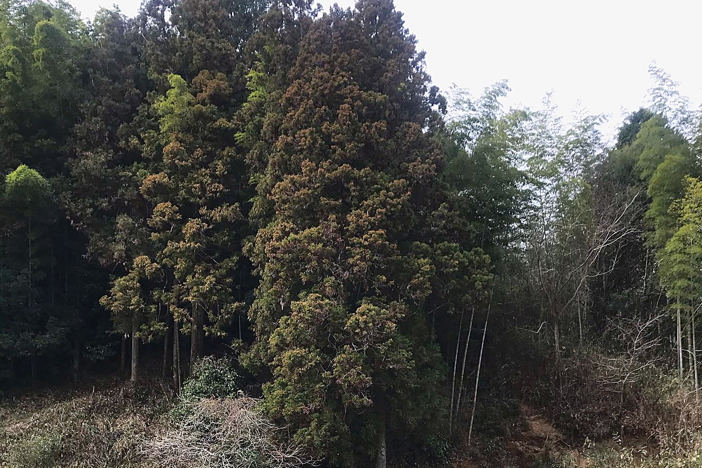
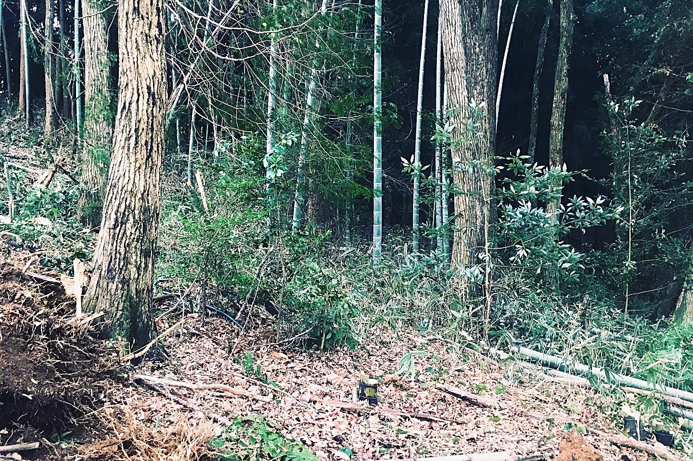
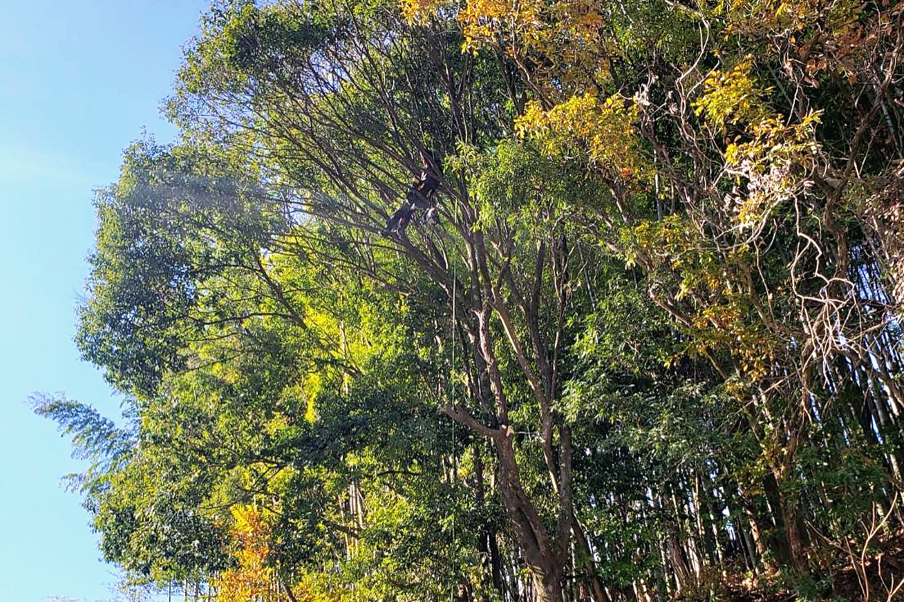
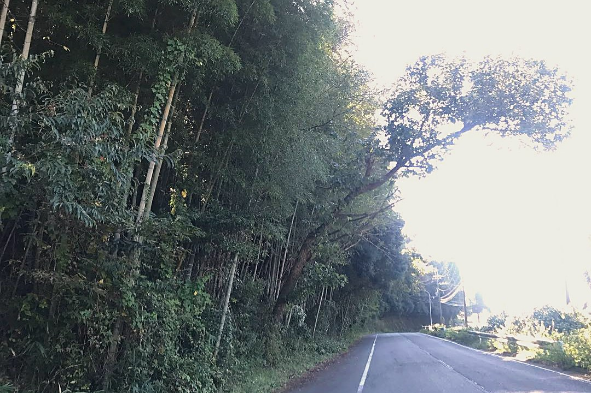
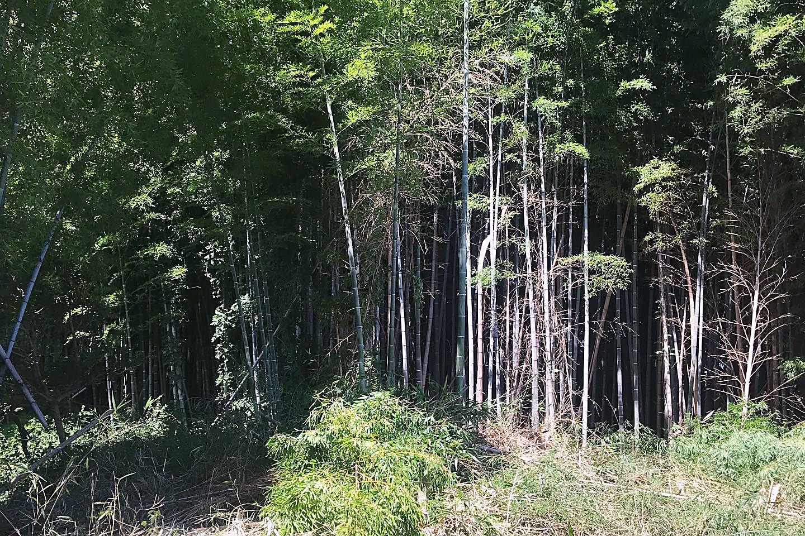

密集した杉・檜の伐採工事
庭に密集した杉・檜の伐採工事です。住宅や畑が隣接する立地で、重機「フェラバンチャーザウルス」を使用しました。全工程9日間のうち伐採が3日間、搬出が6日間で、ほぼ1人で施工しました。陽当たりと湿気の改善を目的とした作業です。
Instagramの投稿を見る ↗
実際の作業記録
竜樹伐採がInstagramに投稿してきた、実際の伐採・剪定などの作業記録です。写真は各現場で撮影したもので、文章は投稿内容に基づいてまとめています。
複数枚の投稿については、取得できた代表写真1枚を掲載しています。投稿の時期は、作業内容を確認できるInstagram投稿の年月で表示しています。
伐採、剪定、道路沿いの支障木処理、作業道や竹林の整備など、現場ごとに異なる作業を記録しています。

庭に密集した杉・檜の伐採工事です。住宅や畑が隣接する立地で、重機「フェラバンチャーザウルス」を使用しました。全工程9日間のうち伐採が3日間、搬出が6日間で、ほぼ1人で施工しました。陽当たりと湿気の改善を目的とした作業です。
Instagramの投稿を見る ↗
太陽光パネルに近接した支障木の伐採です。斜面の現場で重機を使用し、高木が密集する中を1本ずつ処理しました。倒木によるパネル被害の予防を目的とした作業です。
Instagramの投稿を見る ↗





作業の様子を動画で投稿したものから、場所や作業内容が確認できるものを選んでいます。動画はInstagramでご覧いただけます。
場所：奈良県郡山市（位置情報タグの表記どおり）／2023年2月投稿。市街地で伐採工事を行っている動画です。
Instagramで動画を見る ↗場所：位置情報タグなし／2023年1月投稿。二股の木の伐倒動画です。投稿では、追い口で木が裂けないよう、方向を考えて切る方法が説明されています。
Instagramで動画を見る ↗場所：位置情報タグなし／2021年9月投稿。かかり木になった木を処理する林業作業の動画です。投稿には重機使用のタグがあり、弟子に切らせた記録も残されています。
Instagramで動画を見る ↗場所：奈良市 北村町（位置情報タグの表記）／2023年6月投稿。林業の木寄せ（集材）作業を撮影した動画です。
Instagramで動画を見る ↗場所：位置情報タグなし／2022年10月投稿。大きな木を伐採する作業の動画です。
Instagramで動画を見る ↗木と周りの写真、市町村をLINEでお送りください。電話でのご相談も受け付けています。
日々の作業は、Instagram @ryu_sorashi でも公開しています。